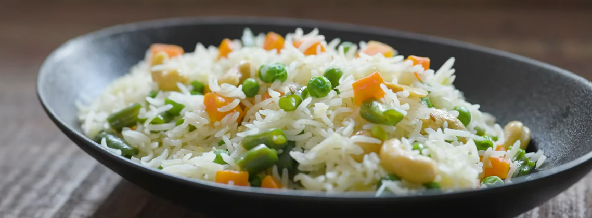
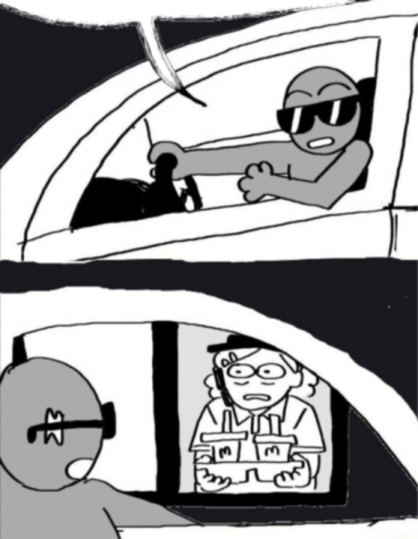

Vegan's Rice Plate
Description :
By far the longest recipe on this website The Vegan's Rice plate is a treat for a Vegan
the most non violent recipe on this website and dare i say on the WEB ?
No i do not dare to say that cause as the old addage goes theres always a bigger fish

Stuff to make with
- 1 cup / 200g White basmati rice
- 2 Tablespoon cooking oil
- 1 to 2 Bay leaves ( THANK YOU BORIS )
- 1/4 to 1/2 Teaspoon Cumin Seeds (I have added 1/2 Teaspoon of cumin)
- 100g Onion
- 1/2 Tablespoon Garlic
- 1/2 Tablespoon Ginger
- 70g Carrots
- 70g cup Green Beans - Cut in to 1/2 inch long pieces
- 70g Frozen Green Peas
- 1/2 teaspoon Garam masala
- Salt
- 350ml Water
- 50g Toasted cashew nuts
Steps
- wash the rice like your mother used to wash you untill the water runs clear
- Now let the rice rest and soak in its bath tub for 30 mins
- Now unplug the little drainer in the bath tub and watch the fear enter the rice's eyes as it wakes up from its rest . But don't be rude and let it dry of in its strainer
- Get a pan add the cumin oil and most importantly ( again thank you boris ) ADD THE BAY LEAF
- FRY the mixture but do net let the cumin burn i am watching you garry dont let it burn again
- Now chop the onions and add them to the mixture add 1/4 tbsp of salt as well and fry untill onion is soft
- Chop the ginger, garlic and add them to the micture frying on medium to medium-low heat for about 1 minute.
- Now chop the carrots into cubes and green beans into 1/2 inch long peices . Fry the vegetables on medium heat for about 1 minute.
- Then add the rice, garam masala, salt and fry for another 30 seconds to a minute.
- Now Add the water and frozen green peas. Bring the water to a vigorous boil.
- Once the water starts to boil, cover the pan with a lid and reduce the heat to low.
- Cook on low heat until the rice is cooked.
- Once the rice is cooked, uncover the pan and cook to remove moisture for a couple of seconds
- Turn off the heat.
- Add the roasted cashews and mix it VERY GENTLY to prevent the the rice grains from breaking.
- DO NOT OVER MIX THE RICE OTHERWISE IT WILL TURN MUSHY.
- allow it to rest for 2-3 mins before serving allow it to rest with the lid covered
HOLY HELL THIS WAS LONG. SO CAN I GET MY ORDER NOW
-
HOLY HELL THIS WAS LONG. SO CAN I GET MY ORDER NOW
